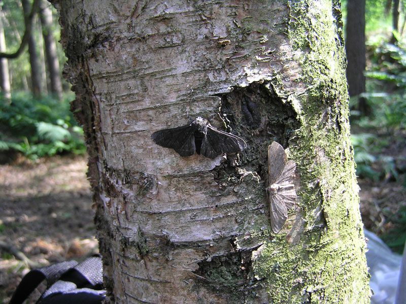
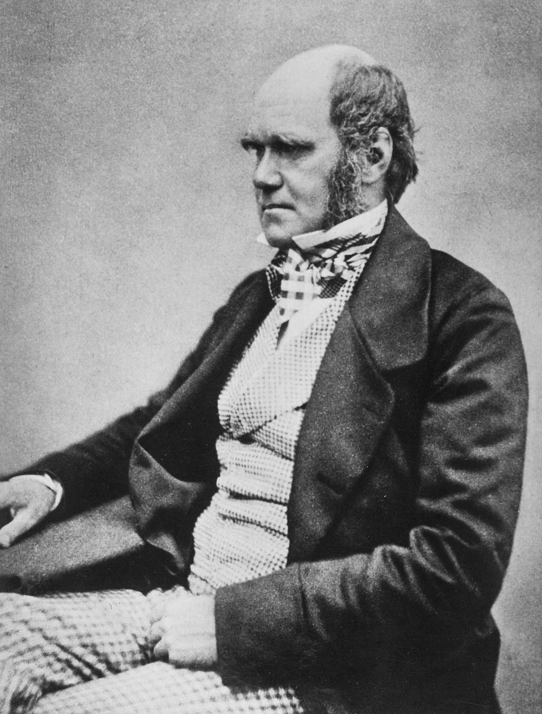
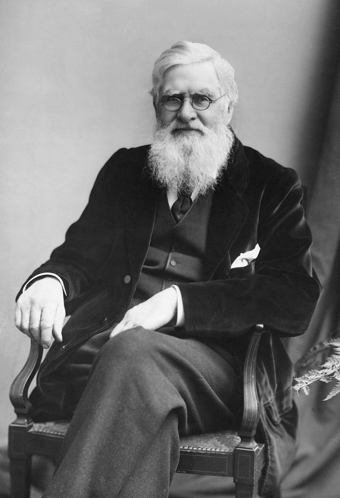
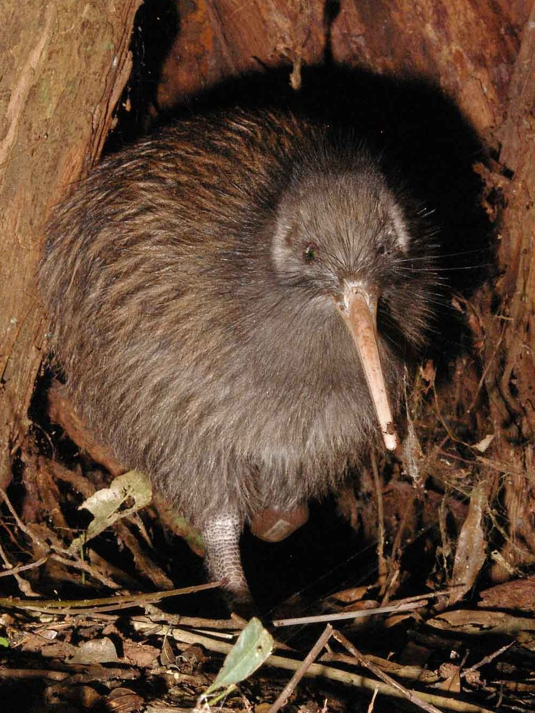
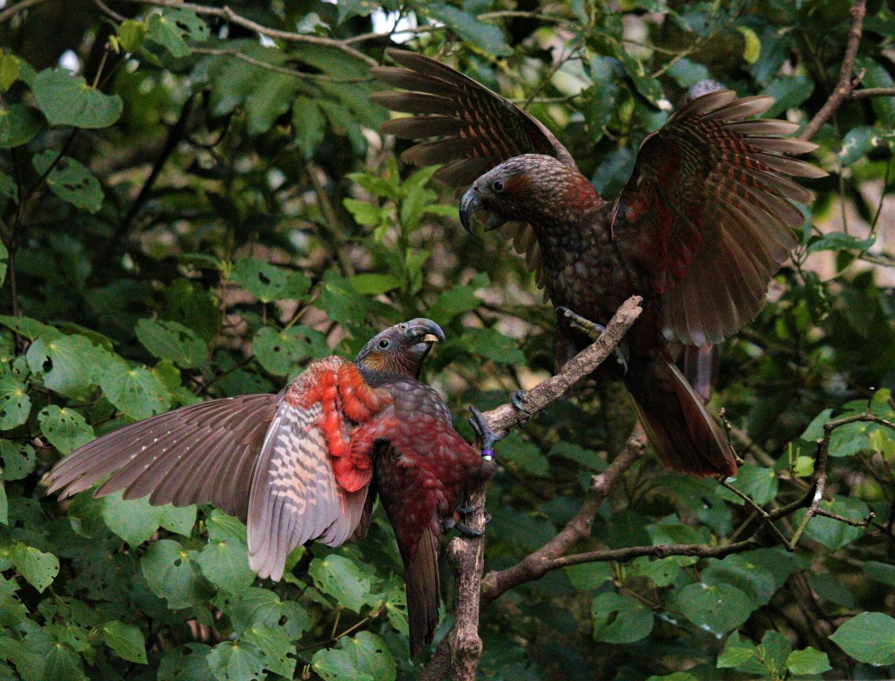

Year 9 Science · Lesson 8
Natural selection
Why some adaptations win
There are two moths on this tree. Can you find both?


Starter · true or false?
"Giraffes stretched their necks to reach high leaves, so their babies were born with longer necks."
False
This was Jean-Baptiste Lamarck's idea, in 1809. Stretching your neck doesn't change your genes, so it can't be passed on to your offspring.
Keep this in mind. By the end of the lesson you'll be able to give the right explanation.
The scientists
Two people had the same idea
Charles Darwin sailed round the world on HMS Beagle from 1831 to 1836, including the Galápagos Islands.
Alfred Russel Wallace collected animals in the Amazon and in the islands of South East Asia.
Each worked out natural selection on his own. Their ideas were presented together in 1858. In 1859 Darwin published On the Origin of Species.




Learn this sequence
Natural selection in five steps
Nothing changes because it needs to. The variation is already there; the environment picks which survives.
Case study · Lab manual p19
The peppered moth
- Before 1850: almost all peppered moths in England were light, speckled like the lichen on tree bark.
- 1848: a dark moth was recorded in Manchester. Factory soot was blackening the trees.
- 1895: about 98% of Manchester's peppered moths were dark.
- After 1956: clean air laws cut the soot. Light moths became common again.


Lab manual p19 Q1
Explain the moths with the five steps
| Step | Peppered moths during the Industrial Revolution |
|---|---|
| Variation | Some moths were light, a few were dark. |
| Selection | On sooty trees, birds spotted and ate more light moths. |
| Reproduction | More dark moths survived to breed. |
| Inheritance | Their offspring inherited the genes for dark wings. |
| Time | Over many generations, dark moths became the most common. |
Back to the starter
Now explain the giraffe properly
Use all five words: variation, selection, reproduction, inheritance, time.
Giraffes varied in neck length. When food was short, those with longer necks could reach more leaves and were more likely to survive. They had more offspring, which inherited the genes for longer necks. Over many generations, long necks became common.
Lab manual p16
Activity: Birds and Beaks
- Write the foods in the top row of the results table.
- With one beak, pick up as much of the first food as you can in 30 seconds. Drop it in your cup (the "stomach").
- Count and record how many pieces you collected.
- Repeat with each food, then with each beak.
Beaks
- Tweezers
- Clothes peg
- Spoon
- Chopsticks
Lab manual p16 Q2
Beaks of Aotearoa

Kiwi
Long beak with nostrils at the tip. Probes the soil to smell out worms.

Tūī
Curved beak and a brush-tipped tongue to reach nectar in flowers.

Kererū
Wide gape to swallow big fruits whole, like taraire and karaka.

Kākā
Strong, hooked beak to rip open bark and dig out grubs.
Kiwi: Maungatautari Ecological Island Trust, public domain. Tūī and kererū: Charles J. Sharp, CC BY-SA 4.0. Kākā: Kate Macbeth, CC BY-SA 4.0.

Exit question · Lab manual p16 Q3
An island where the only food is hard seeds
Which beak shape would help a bird survive and reproduce? Explain using the idea of natural selection.
Use all five steps: variation, selection, reproduction, inheritance, time.
Start with: "The birds on the island had different beaks…"
Away today?
Missed this lesson? Catch up here
- Learn the five steps of natural selection (slide 4), and why the giraffe starter is false.
- Lab manual p19 Q1: explain the peppered moth using the five steps.
- Lab manual p16: ask a classmate for their Birds and Beaks results, then answer Q1 and Q2.
- Exit question: p16 Q3, the hard seed island.